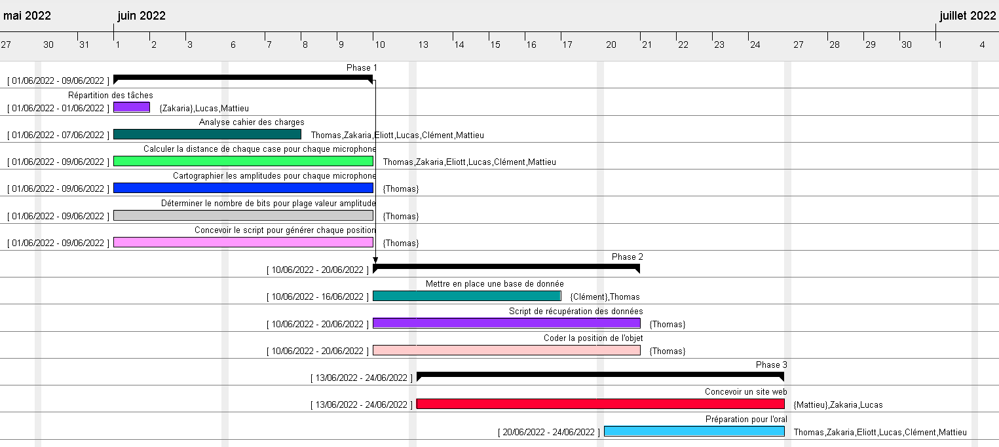

Tout d’abord, pour cette SAE 24 intitulée Localiser une source sonore dans un environnement intérieur, notre équipe était formée de 6 élèves. Ce projet nous a été proposé par nos professeurs référents qui sont Mr. Brulin ainsi que Mr.Roux. Nous avions à disposition 52h30 pour la réalisation de ce projet. Le but de ce projet était donc de permettre à une personne de retrouver un objet qui émet du son.
Premièrement, la mise en place d’un Gantt afin de gérer les tâches à réaliser ainsi que de répartir la charge de travail.
Ensuite, nous avons créé une base de données à l’aide du logiciel MySQL. Elle contient 3 tables :
De plus, nous avons codé un script qui permet de générer une amplitude binaire provenant des trois capteurs de la salle. La création d’un serveur MQTT nous permet de recevoir nos valeurs binaires afin de les récupérer et les décoder à l’aide d’un script pour les transformer en amplitudes. Pour finir cette troisième étape, la formule d’amplitude du signal reçu qui est k/d²; elle nous permet d’avoir la distance d’un point.
Donc les 4 scripts qui seront réalisés à l’aide du langage PHP sont :
Le site web est composé de 4 pages :
La structure du site, c'est-à-dire les pages statiques sont écrites en HTML5 et en CSS3.
Voici la répartition du travail sur notre diagramme de GANTT:
